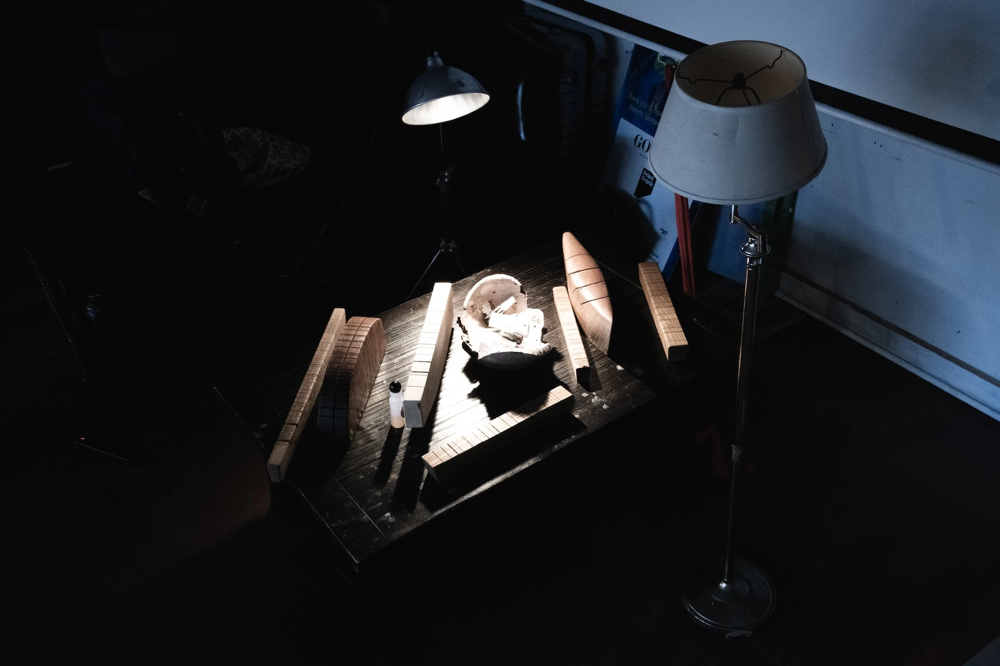

This is the portal for my apprenticeship with Daniel Fishkin in NY during the summer and fall of 2024
During this apprenticeship Daniel and I worked on building Daxophones, Arbrassons and Solar Sounders, while I learned woodworking, pcb design and arduino code.
